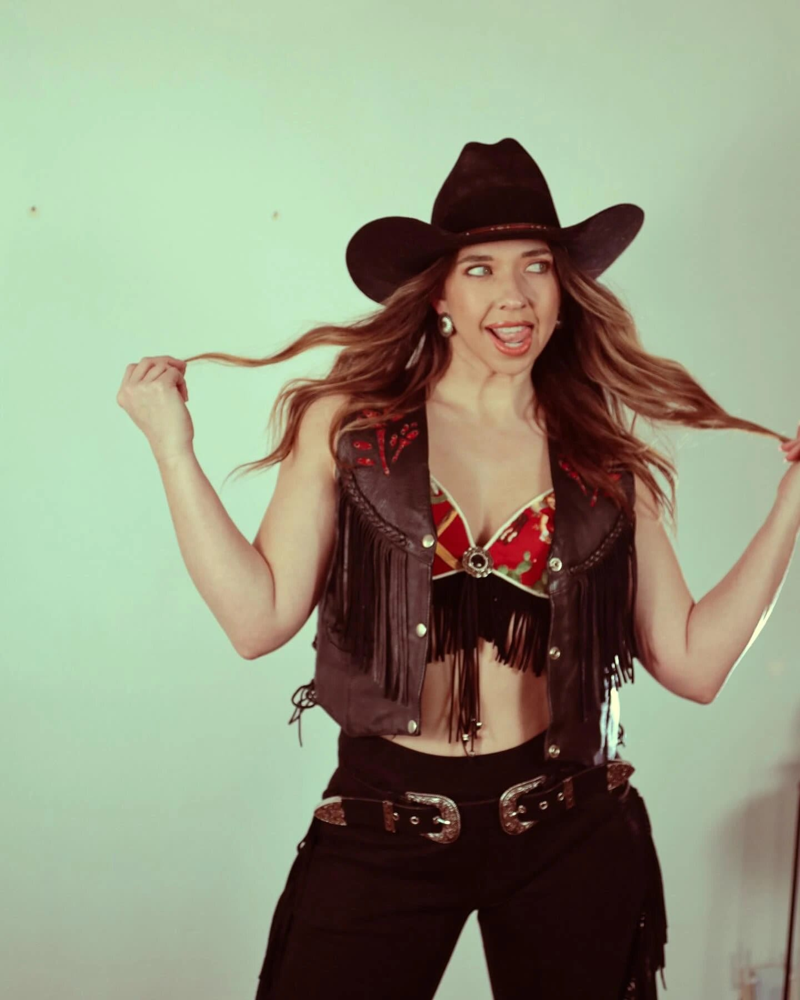
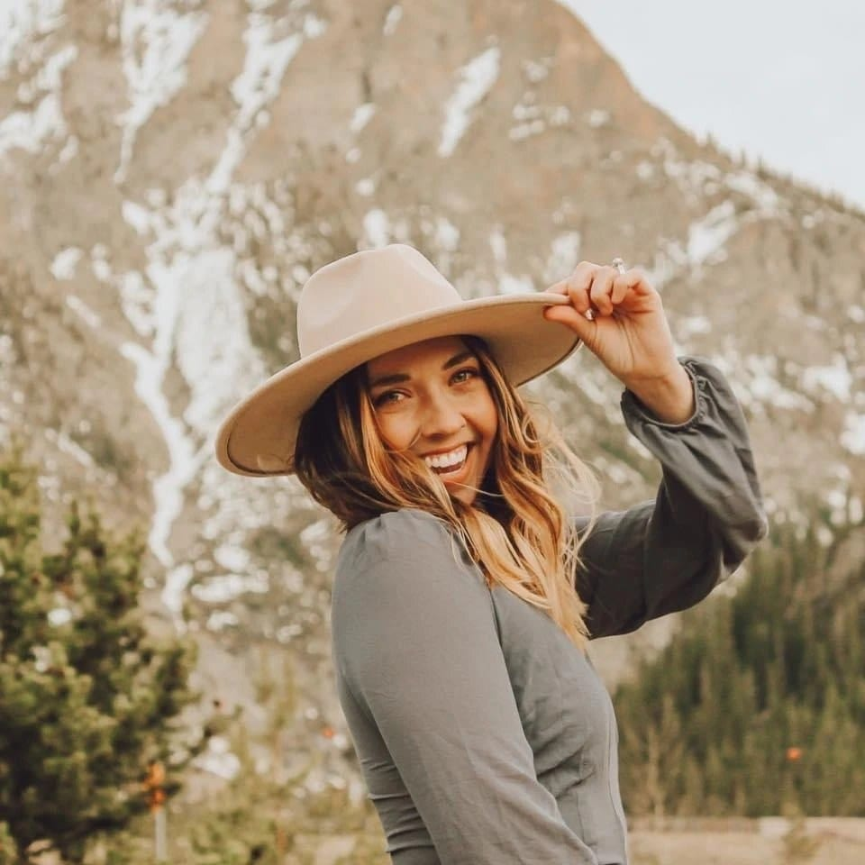
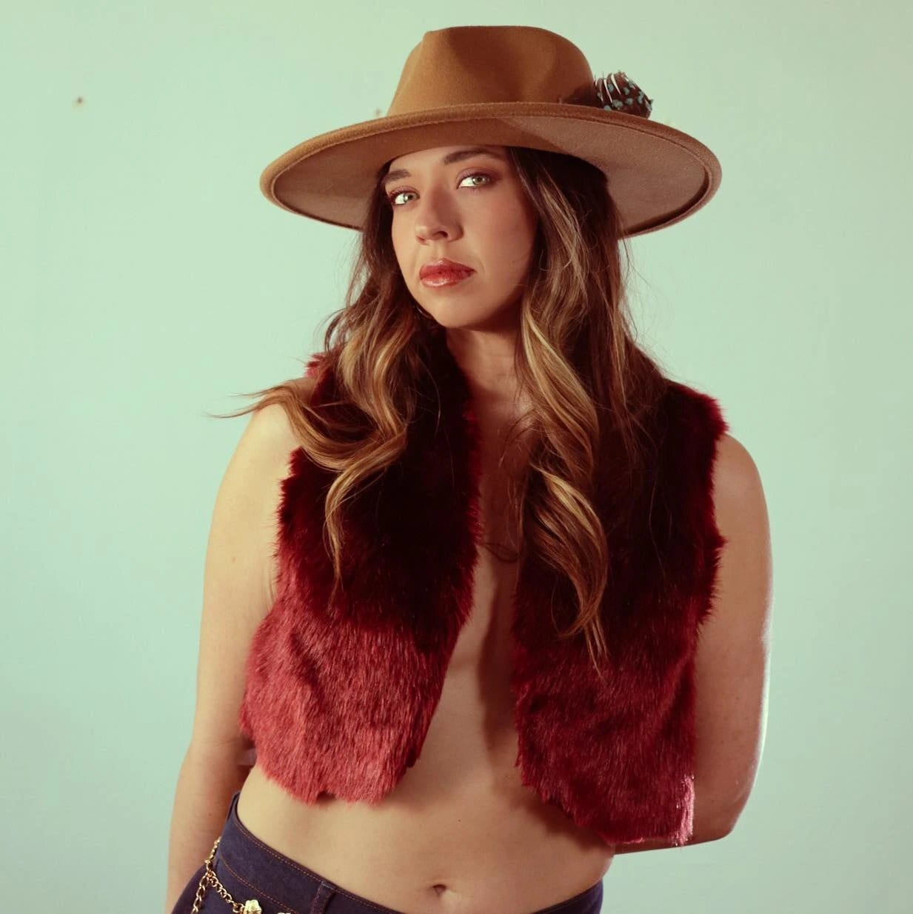

Country, rock and pop
Chelsey Webb
- WinnerFemale Entertainer of the YearColorado Country Music Hall of Fame, 2025
- NomineeFemale Vocalist of the Year2024
Covers and originals, as a duo or with a full band.
You know that feeling when the fiddle kicks in on a country song you love? Chelsey Webb is a Denver country singer raised in Alabama, with a big, soulful voice and just enough outlaw spirit, and she plays country, rock and pop covers alongside her own songs. You can book her as a duo, or bring her full band, fiddle and all, when you want people dancing.
Awards and press
- WinnerFemale Entertainer of the YearColorado Country Music Hall of Fame, 2025
- NomineeFemale Vocalist of the Year2024
In the press and on air

Press · The Denver Gazette · 2025
Her Hall of Fame win and her road from Alabama and Nashville
Stages and credits
- Cheyenne Frontier Days, The Grizzly Rose, the Greeley Stampede, the National Western Stock Show, the Copper Mountain Country Music Festival, the Douglas County Fair & Rodeo and the Chicken Fight Festival at Elitch Gardens
- Has shared stages with Tracy Byrd, Jackson Dean, Corey Kent, Wyatt Flores, Chayce Beckham, Josh Abbott Band, Phil Joel of the Newsboys and Love & The Outcome
- Sings on Meghan Clarisse's album Shadows of a Ghost Town, and Hall of Fame pedal steel player Todd Clayton plays on her single Blue Side of Lonesome (2025)
- Recorded at Omni Studios in Nashville
Trusted and booked by
Chelsey was named Female Entertainer of the Year at the 2025 Colorado Country Music Hall of Fame awards, and The Denver Gazette covered the night. She’s played Cheyenne Frontier Days, the Greeley Stampede, the National Western Stock Show, the Grizzly Rose and the Copper Mountain Country Music Festival, and she’s shared the stage with Tracy Byrd, Jackson Dean, Corey Kent and Wyatt Flores, too.
She grew up in Alabama singing along to the family jukebox and Southern gospel, and she’s recorded in Nashville at Omni Studios. She names Shania Twain, Faith Hill, Dolly Parton, Stevie Nicks and Janis Joplin among the singers who shaped her smoky, soulful voice.
Along with the covers, Chelsey writes and records her own songs. Two of her 2025 releases, Look What I Found and Blue Side of Lonesome, are songs her family wrote in the 1990s, and she brought them back to life with her husband.
Configurations
| Size | What it suits |
|---|---|
| DuoChelsey on vocals, with her husband on acoustic guitar and harmony vocals | As a duo, they’re a warm, fun choice for a cocktail hour, a dinner or a party at home, and they play country classics, pop and classic rock. |
| Five or six-piece bandLead vocals, acoustic guitar, electric guitar, fiddle and drums, and the six-piece adds pedal steel (the guitar that gives classic country its crying sound) | This is the size to book when you want people dancing at a wedding reception, a company party or a big birthday. |
Send us your date and we’ll help you choose the size that works best. She can bring a band somewhere in between, too.
Occasions
Perfect booking for
- Country weddings
- Book the duo for your cocktail hour, then bring in the full band for the reception when you want people dancing.
- Backyard parties
- Chelsey plays a lot of fairs, rodeos and outdoor stages, so a big summer party in the backyard suits her band well.
- Birthdays and anniversaries
- The duo is an easy fit for a party at home, and the full band is a blast for a milestone birthday when your friends love country music.
- Company and holiday parties
- Her song list runs from Brooks & Dunn to Sabrina Carpenter, so there’s something for a mixed crowd, and the full band gets people dancing.
Planning toasts or a program? We can work the music around them with your run of show. You can also get a general idea of what live music costs in Colorado from our cost guide.
Song list
A sample of her songs.
This is a sample of the covers on her song list, and we’ll put the setlist together with you.


- Sweet Home AlabamaLynyrd Skynyrd
- Here for the PartyGretchen Wilson
- Neon MoonBrooks & Dunn
- Wagon WheelDarius Rucker
- The Devil Went Down to GeorgiaThe Charlie Daniels Band
- Heads Carolina, Tails CaliforniaJo Dee Messina
- Piece of My HeartBig Brother & The Holding Company
- You Look Like You Love MeElla Langley
- TipsyShaboozey
- EspressoSabrina Carpenter
- Party in the U.S.A.Miley Cyrus
- What's Up?4 Non Blondes
- LingerThe Cranberries
- All I Wanna DoSheryl Crow
- Listen to the MusicThe Doobie Brothers
- Shut Up and DanceWalk the Moon
- I Wanna Dance with Somebody (Who Loves Me)Whitney Houston
- Girls Just Want to Have FunCyndi Lauper
- No DiggityBlackstreet
- 10-90Muscadine Bloodline
- Nose on the GrindstoneTyler Childers
Video Clips
Watch Chelsey Webb and her band play live








What clients say
“This husband-and-wife duo was the perfect addition to our Americana-themed grand opening. She was exactly what we needed, her voice and presence brought everything together, and together they created a warm, lively vibe that made the event truly special. Highly recommend!”
Chelsey Webb questions
Still have a question? Our full question list may have the answer.
Does Chelsey Webb play covers or her own songs?
Can the volume stay down during dinner?
Does she play outdoor events?
Can we request a song?
Does she play outside Denver?
Want Chelsey Webb and her band at your event?
Send us your date and we’ll let you know if Chelsey is available and what it would cost.
Want photos or video of your event? Add them to your booking.